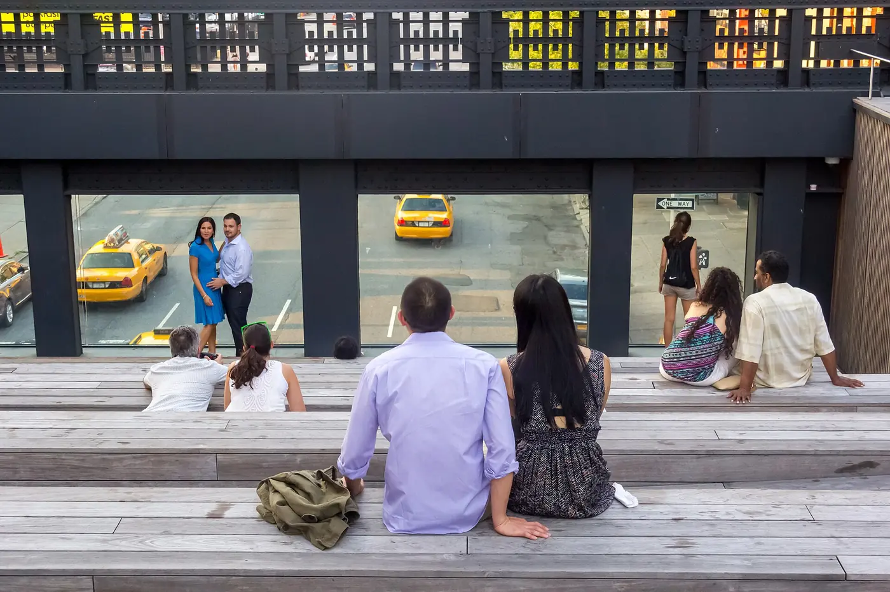

The High Line, walked south to north
The High Line turns a disused freight railway into a 2.3-kilometre park above Chelsea. It is free, it is short, and the difference between a good visit and a shuffling one is mostly timing and direction.
Checked 2 November 2026. Prices, opening hours and transport details were verified against official sources. Things change — confirm before you book. How we check.

A garden on a railway
The park follows the old West Side freight line from Gansevoort Street to Hudson Yards, with the planting, benches and views doing most of the work. It is at its best when you treat it as a walk rather than a sight.
Walk south to north: start at Gansevoort Street in the Meatpacking District and finish at Hudson Yards, where the 7 train and a food hall wait. The stretch between 23rd and 30th Streets is the calmest, with the planting at its most interesting and fewer people stopping for photographs.
Entrances are frequent but not obvious at street level: Gansevoort Street, 14th, 16th, 23rd, 30th and 31st via the Moynihan Connector. Lifts serve four points, though they break often, so check the status if you need step-free access.
Three reasons to put it on a morning, not an afternoon
The planting, the price and the two neighbourhoods it joins together.
The planting is the attraction
The design changes through the seasons, and the gardens are more interesting than the views for much of the walk. Slow down and read the labels as you pass.
Free, and easy to fit in
No booking and no queue at most hours. An hour on the High Line fits between a Chelsea Market lunch and an afternoon in Greenwich Village.
It connects two good neighbourhoods
Start in the Meatpacking District and finish at Hudson Yards, or reverse it. Either way the walk joins two places you probably wanted to see anyway.
How to walk the High Line
There is no ticket and usually no queue. What matters is the entrance you choose, the direction you walk and the season you visit.
- Check the seasonal hours on the official site before you go: 7am–10pm from April to November, and 7am–8pm from December to March.
- Start at Gansevoort Street if you want the full walk, or join at 23rd Street if you only have an hour.
- Walk south to north and finish at Hudson Yards, where the 7 train and the food hall are right there.
- If you need step-free access, check the lift status on the official site that morning. The lifts do break, and not every entrance has one.
- Leave bikes, scooters and dogs at home. Only service dogs are allowed, and the path is narrow when it is busy.
A free park above the streets
The High Line is free to enter and open every day, with seasonal hours. The official site lists the entrances, the lift status and what is currently happening on the park.
Check hours and entrancesOfficial park site. No ticket is needed; hours change by season.
What most visitors get wrong
-
01
Go before 11 on a weekday
Weekday mornings are the quietest. Weekends after 11am are a slow-moving line of people, especially between 14th and 23rd Streets.
-
02
Walk south to north
Finishing at Hudson Yards puts you at the 7 train and a food hall, which is a better end point than a start.
-
03
The lifts are the weak point
They break often enough that the park posts live status. If one is out, the nearest step-free alternative may be a block or two away, so check before you rely on it.
-
04
Treat 23rd to 30th as the calm part
The middle section is quieter and the planting is at its best. If you only have half an hour, enter at 23rd Street and walk north.

Nearby and worth your time
Edge at Hudson Yards
The sky deck at the end of the walk. Book a slot for after your High Line morning.

Where to eat in Chelsea
Chelsea Market and the taquerias nearby make the obvious lunch stop after the walk.

Chelsea and the West Side
How the High Line fits into a Manhattan day, and what to see nearby.
Questions people ask
Is the High Line free?
Yes. The High Line is a public park and needs no ticket. It is open every day, with shorter hours from December to March.
What are the opening hours?
From 1 April to 30 November the park is open 7am–10pm. From 1 December to 31 March it is open 7am–8pm. Check the official site for current hours before an early or late visit.
How long does the High Line take?
An hour to an hour and a half to walk the whole route, which is about 2.3 kilometres end to end. If you only have half an hour, join at 23rd Street and walk north.
Where should I start the walk?
Start at Gansevoort Street for the full route, or at 23rd Street for the quiet middle section. Either way, finish at Hudson Yards for the 7 train and the food hall.
Can I bring a bike or a dog?
No. Bikes, scooters, dogs (other than service dogs) and smoking are not allowed on the park. The path is narrow with planting either side, so it is not a cycling route.